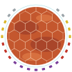

Terraforming Mars · Expédition Arès
Automa hybride
Un adversaire qui joue presque comme un joueur.
Un automa pour jouer en solo à Terraforming Mars: Ares Expedition. Il fait monter son moteur, terraforme Mars et marque des points. Un petit paquet de 15 cartes décide de ses phases et de ses cibles. Tout passe par des cubes : son tour se joue sans calcul et ne demande presque aucune décision au joueur.
Jouer sans rien imprimer
Ouvrir l'appliAjoutez-la à l'écran d'accueil de votre téléphone : après une première visite, elle marche sans réseau.
Vous préférez des cartes ? Livret et cartes à imprimer

Jouer avec l'appli
Le mode Jeu, tour par tour
- Choisissez votre phase en voyant ce qu'elle déclenche pour l'automa.
- L'appli tire la carte automa : sa phase et sa cible.
- Les phases se résolvent une par une : ce que vous faites, puis ce que fait l'automa.
- Son plateau, au choix : l'appli le tient, ou il reste sur la table. En option, un suivi détaillé garde les paramètres de Mars et les courbes de la partie.
Ce qu'il vous faut
- Le jeu de base Terraforming Mars: Ares Expedition.
- Un téléphone, une tablette ou un ordinateur, posé sur la table.
- Rien à imprimer : l'appli remplace les cartes automa et les cartes de phase joueur.
- En français et en anglais.
Sur ordinateur ? Scannez ce code pour ouvrir l'appli sur votre téléphone.
Version 0.7
Les valeurs (5 cuivres pour 1 argent, moteur de départ selon le niveau) sont en test. Les comptes rendus de parties, partagés sur GitHub, serviront à les ajuster.
Comment il joue
Une carte par tour
Pendant que le joueur choisit sa phase, l'automa retourne une carte : elle donne sa phase et sa cible. Son paquet lui donne un style, avec beaucoup de Production et d'Action, et trois cartes réactives : il riposte, il saisit l'occasion, il fonce sur le paramètre en retard.
Des cubes, pas de calcul
Chaque phase révélée lui rapporte un cuivre, et 5 cuivres font un argent. Tout se paie 1 argent : un cran d'oxygène, de température, un océan ou un cran de moteur. Son tour se joue en quelques secondes, sans compter un seul MC.
Un moteur qui accélère
En Développement, il investit un argent dans son moteur. En Production, son moteur lui rend autant de cuivres. Lent au départ, il monte en puissance au fil de la partie, comme un vrai joueur. Mais chaque cran de moteur coûte un argent qui ne terraforme pas.
Il dispute Mars au joueur
Il fait monter l'oxygène, la température et les océans, gagne du NT et marque des PV en Construction. Il ne pose pas de forêt. Il terraforme avec le joueur, mais il compte bien finir devant, et il peut clore la partie avant que le joueur soit prêt.
Un tour en exemple
Avant le tour, l'automa a 4 cuivres dans sa réserve et un moteur à 2.
-
Planification
JoueurAutoma
-
IDéveloppement
+1 cuivre : 5 cuivres, échangés contre 1 argent.
−1→Il le dépense : moteur 3, réserve vide.
-
IVProduction
+→
+1 cuivre, puis 3 grâce à son moteur.
Réserve : 4 cuivres. Encore un, et il aura un argent.
Trois gestes, aucun calcul. De Très facile à Très difficile : seule sa production de départ change (de 1 à 5).
Face au solo officiel
Le solo du jeu de base est un défi contre la montre. L'automa hybride en fait un duel : un rival qui terraforme pour lui et marque des points.
| Solo officiel | Automa hybride | |
|---|---|---|
| Le but | Terraformer Mars seul avant la fin des 25 tours : gagné ou perdu. | Finir devant un adversaire qui marque des points. |
| La 2e phase | Une pioche neutre de 5 phases, chacune une fois tous les 5 tours : on peut la deviner. | Un paquet de 15 cartes, plus de Production et d'Action, et des cartes réactives : on la lit plutôt qu'on la devine. |
| La terraformation | Selon le niveau, un coup de pouce sur l'oxygène ou la température, sans points pour personne. | Il terraforme pour lui : chaque cran qu'il monte lui rapporte un point et prive le joueur d'un cran. |
| La durée | 25 tours, toujours. | Jusqu'à ce que Mars soit terraformée : plus il est fort, plus la partie est courte. |
| Les choix du joueur | La phase choisie ne sert qu'au joueur. | Production et Développement le font aussi accélérer : chaque choix de phase est un arbitrage. |
Vous préférez des cartes ?
Tout se joue aussi sans écran : le livret et les cartes de la v0.6 restent valables pour la v0.7, les règles n'ont pas changé.
6 Pages de règles
Le livret de l'automa, en PDF A4 : mise en place, tour de jeu, cartes et phases, plus une page d'aide-mémoire.
Bientôt
15 Cartes automa
Le paquet automa, en PDF A4. En option : 3 aides-mémoire et 5 cartes de phase joueur.
Bientôt
Ce qu'il vous faut
- Le jeu de base, avec un plateau joueur et des cubes cuivre et argent pour l'automa.
- Les 15 cartes automa : 3 feuilles A4, avec leur dos et 3 aides-mémoire facultatifs.
- En option, les cartes de phase joueur : 1 feuille A4 (5 cartes), à la place des cartes de phase du jeu.
- Le livret, pour la première partie.
Pourquoi des cartes de phase joueur ?
Elles sont facultatives et remplacent les cartes de phase du jeu. Côté joueur, elles disent la même chose avec nos mots : sa compétence et son bonus. En plus, chacune rappelle ce que fait l'automa quand la phase est révélée. Pendant la partie, tout est sur la table : plus besoin d'ouvrir le livret.